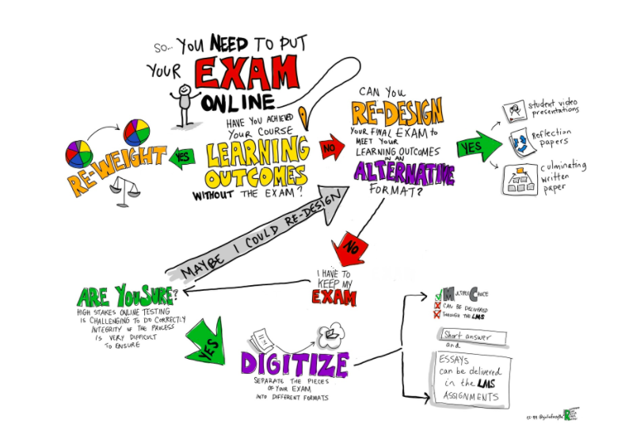

Introducción
-
¿Por dónde comienzo?
Si en este momento está buscando información sobre Brighstpace. Le comentamos que existe un ecosistema detallado donde puede adquirir información clasificada por roles. Vea la sección de Brightspace para esta informacion.
¡Échele un ojo a la sección de Diseño Pedagógico! No es igual hacer una clase virtual que una clase presencial. Finalmente, hable con sus colegas. La comunidad es el aliado más importante para el aprendizaje colectivo. Diviértase y comparta sus experiencias, frustraciones y logros.
Lea una guía de aspectos básicos para dictar clases virtuales de la Vicerrectoría Académica.
-
Cómo iniciar en Brighspace
El enlace de inicio de sesión para nuestra universidad es el siguiente:
https://uniandes.brightspace.comUna vez ingrese, solo debe autenticarse como de costumbre y ¡Listo! Acaba de ingresar a su nuevo entorno de enseñanza y aprendizaje. Para iniciar a trabajar en su curso, visite la sección de Brightspace.
-
¿Cómo uso Webex?
Conozca los detalles para iniciarse en Webex en el siguiente documento de capacitación para Webex desarrollado por el Comité.
El nuevo Brightspace
-
¿Hay tutoriales en video?
¡Sí! En el siguiente canal de YouTube encontrará una guía completa con información organizada por roles (profesor, admin, estudiante, acudientes) en videos cortos. Vea las playlist y encontrará información agrupada.
-
¿Y para encontrar instrucciones puntuales por escrito?
Afortunadamente Brighstpace cuenta con una Documentación en múltiples idiomas. Este sitio se parece mucho a esta página. Está organizado por roles y preguntas. Bien pueda echarle una mirada.
-
¿Hay algo más detallado y menos por viñetas?
Nuestro DSIT ha preparado una serie de 5 capacitaciones más extensas que aún siguen en desarrollo. La Capacitación 1 es muy general e introductoria. La Capacitación 2 enfatiza más en creación de módulos de contenido. La Capacitación 3 trata tareas, foros, premios, listas de control y tarea en video.
Las demás grabaciones las encontrará aquí una vez estén disponibles.
Diseño pedagógico
-
Keep it simple
Como primer consejo de diseño. Recuerde que existen cientos de herramientas que puede utilizar virtualmente para una amplia variedad de propósitos. Como comité de Docencia le recomendamos hacer pruebas de a poco incrementalmente, con configuraciones muy simples y básicas en principio. Una vez se sienta bien y con confianza ya puede incrementar las funciones de sus cursos virtuales. Este es un proceso de aprendizaje para todos. Está bien sentirse abrumado las primeras veces. Lea esta guía del Comité y estos 10 tips para sus clases remotas.
-
¿Qué me recomienda para mis evaluaciones?
- Considere hacer evaluaciones con libros abiertos, apuntes y acceso a internet. Procure hacer preguntas complejas y, a la vez, específicas. Por ejemplo “Defina un problema de acción colectiva y dé un ejemplo específico de su contexto familiar”.
- Puede pensar en otros formatos de evaluaciones: exámenes orales, videos, podcasts, infografías o presentaciones (pptx o prezi).
- Incluya en las pruebas o actividades preguntas en las cuales los estudiantes escriban una reflexión o describan su experiencia de escribir el ensayo o hacer el examen.
- Abra la posibilidad de que los estudiantes puedan hacer más de un intento en cada evaluación, pues es posible que tengan problemas informáticos que impidan llevarla a cabo exitosamente en el primer intento.
Recuerde que los exámenes no son la única forma de evaluar, como se muestra en la siguiente infografía:
 -
¿Qué tengo en cuenta para mis clases?
Es diferente diseñar un curso virtual, que adaptar un curso presencial a uno virtual. Hay temas que son naturalmente diferentes en la experiencia. Le recomendamos que tenga en cuenta:
- No todo tiene que ser sincrónico. Identifique qué actividades pueden hacer los estudiantes sin estar conectados al mismo tiempo.
- Antes de empezar las clases sincrónicas abra todas las pestañas, archivos o enlaces que piensa compartir durante la clase. Asegúrese de estar en un lugar con buena iluminación.
- Abra la sesión unos minutos antes de la hora de reunión para solucionar cualquier problema técnico que se pueda presentar y dar tiempo a los estudiantes para conectarse.
- Empiece la clase pidiéndole a los estudiantes escribir un saludo en el chat para verificar que todos están oyendo y viendo.
- Empiece la clase con el orden del día. Presente una agenda clara con la descripción, los objetivos y los momentos de la sesión, como un abstract y una tabla de contenidos. Puede colgar esta agenda en Sicua antes de cada sesión para que los estudiantes tengan listos los materiales necesarios.
-
¡Dígame más! Recomendaciones para las clases 2
Otras recomendaciones incluyen:
- Intercale sesiones magistrales de 15 o 20 minutos con actividades: resolver un cuestionario, comprobación, ejercicio o escribir un párrafo. Durante el tiempo de la actividad indique a los estudiantes que pueden hacer preguntas en el chat.
- Diseñe videos cortos, cada uno sobre un único concepto, con duración entre 5-15 minutos máximo. No haga un video de 1h20 equivalente a sus clases presenciales, pues serán muy pesados para subirlos a Sicua+ o a otras plataformas de internet, serán muy difíciles de diseñar y grabar, y probablemente los estudiantes no lo verán.
- Diseñe una clase a partir de varios videos cortos, que en su conjunto permitan abordar un tema complejo. Piense en clases modulares.
-
¿Y para ser top? Recomendaciones clase 3
Además:
- Tenga en cuenta que sus estudiantes muchas veces tendrán que compartir tecnología con otros miembros del hogar, así que los videos cortos permitirán una mejor organización del tiempo que cada estudiante tiene con esa tecnología compartida.
- Es posible que sus estudiantes tengan menos conocimiento de tecnología de lo que usted cree, así que es mejor tener instrucciones precisas sobre cómo usar el aula o la herramienta virtual que usted propone. Apóyese en los instructivos que tiene la universidad en cada caso (página de la DSIT).
- Aquí encontrará un enlace con recomendaciones del equipo de Adam Smith Works para sus clases.
- RECUERDE TENER UN PLAN B y comunicarlo antes de que inice la clase, en caso de que la tecnología falle.
- Por otro lado LOS ESTUDIANTES DICEN es un conjunto de tips de parte de los mismos estudiantes reunidos por el CONSEFE para que considere en sus clases.
Más herramientas pedagógicas
-
La virtualidad me apasiona ¿Cómo diseño un curso innovador (con más tiempo)?
Esta es la página oficial de virtualidad de la Universidad.
Dese la oportunidad de pensar diferente su curso. No grabe largas sesiones de hora y media. Incrementalmente rediseñe. Lea este artículo para dar el salto, escrito por Pablo Sanabria, y se llevará una mejor idea de cómo se diferencia la educación virtual de la presencial.
Vea esta ficha.
Encontrará más fichas tutoriales en la página de conecta-te Unidandes, con información incluso para monitores.
-
Ejemplo para explicar esto a mis estudiantes (HPE)
Aquí hay dos documentos que podrían serle útiles como una guía para comunicar a sus estudiantes sobre el proceso de adaptación que viene. Primero, un anuncio sobre virtualidad para introducir los cambios. Segundo, un texto sobre cómo va a funcionar el curso describiendo sus dinámicas.
-
E-Learning
Existe una gran variedad de tipos de actividades que se pueden desarrolla en un entorno de e-learning el siguiente documento le presenta varias ideas para sus cursos.
-
¿Qué es el Aprendizaje Activo?
La idea que los estudiantes aprenden más al estar activamente pensando en lo que se está discutiendo, resolviendo problemas y ejercicios. El aprendizaje activo puede serle especialmente útil para incrementar el desempeño de sus estudiantes en los entornos virtuales (por ejemplo intercalando videos cortos y ejercicios).
-
Netiquete: las reglas de estilo básicas
Al interactuar virtualmente el medio es fundamentalmente distinto a aquel de las interacciones "presenciales". Por eso, vale la pena difundir entre sus estudiantes las siguientes reglas de etiqueta para las interacciones virtuales.
-
Sigo perdido ¿A quién llamo?
Para este tipo de procesos, el aliado más fuerte es la comunidad. Pregunte a sus colegas, dialogue no solo sobre lo técnico, sino sobre qué herramientas va a usar, qué dificultades ha tenido, etc. Además, siempre puede consultar a la DSIT. Finalmente, recuerde que el Comité de Docencia de la Facultad siempre está pendiente de los procesos educativos. Puede escribir a ae.orozco10@uniandes.edu.co.
Más herramientas técnicas
-
¿Cómo promuevo interacciones en un entorno virtual?
- Participe en los foros. Destaque buenas participaciones y preguntas y responda a las preguntas utilizando el nombre del estudiante.
- Además de los foros que puede crear en sicua+ también puede utilizar padlet (https://software.uniandes.edu.co/padlet/) que funciona como un corcho / muro en el cual todos los participantes pueden pegar infografías, videos, notas de voz, etc.
- ¡Use FlipGrid! Es una herramienta maravillosa para la discusión mediante intervenciones de video cortas entre sus estudiantes.
- hypothes.is es una herramienta que le permite generar discusiones escritas a partir de un documento y tomar notas individuales o grupales a partir del mismo.
-
¿Cómo puedo reunirme virtualmente?
Le recomendamos el siguiente tutorial detallado de la Facultad de Artes y Humanidades que le comenta sobre Microsoft Teams y Blackboard Collaborate.
Webex le permite reunirse virtualmente también. Para iniciar en reuniones virtuales ingrese con su cuenta uniandes. A continuación el tutorial de Cisco para inciar de ceros.
-
¿Cómo hago grabaciones offline?
Para grabaciones más ligeras puede usar OBS Studio que también funciona para hacer emisión en vivo. Usted puede grabar power point, o puede usar en Windows el reproductor VLC donde puede grabar offline. ¡Ojo! Para que le salga la flechita del cursor en el video debe configurarla así. Para equipos con Mac OS, puede grabar así su pantalla.
Siga esta guía de la Facultad de Artes y Humanidades para la grabación exitosa de sus videos y clases.
Para grabar sus sesiones en vivo con estudiantes, siga las instrucciones de Blackboard Collaborate Ultra (así).
-
Otras apps y recursos de tablero
Para sus aulas virtuales existen otros recursos que puede considerar.
El tablero AWW es un tablero online optimizado para pantallas táctiles. Solo entre y escriba.
Por una parte, EduCreations es una aplicación para Ipad que le permite grabar sus clases. La versión pro va a estar gratuita hasta mayo 1.
La app Splashtop puede usarse para proyectar cosas de su tablet a su computador. Puede usar el free trial.
Otra forma similar a EduCreations de grabar sus clases es ExplainEverything.
Google, como parte de sus servicios en la nube propone Jamboard es una opcion para trabajar tableros colaborativos online que incluso tiene su propio dispositivo físico si desea comprarlo. Si quiere utilizarlo, solo vaya a Google Drive y haga clic en Nuevo>Jamboard.
Finalmente, recuede que en las tiendas de Apple y Android puede encontrar cientos de otras app de tablero blanco gratuitas.
-
No se le olvide
La Universidad da a cada cuenta de correo uniandes 1 tera de almacenamiento libre en One Drive, al cual puede acceder desde su correo.

También puede solicitar espacio en Dropbox según necesidad.
-
Sigo perdido ¿A quién llamo?
De nuevo, para este tipo de procesos, el aliado más fuerte es la comunidad. Pregunte a sus colegas, dialogue no solo sobre lo técnico, sino sobre qué herramientas va a usar, qué dificultades ha tenido, etc. Además, siempre puede consultar a la DSIT. Finalmente, recuerde que recuerde que el Comité de Docencia de la Facultad siempre está pendiente de los procesos educativos. Puede escribir a ae.orozco10@uniandes.edu.co.
Thanks to CodyHouse template, under the next license.